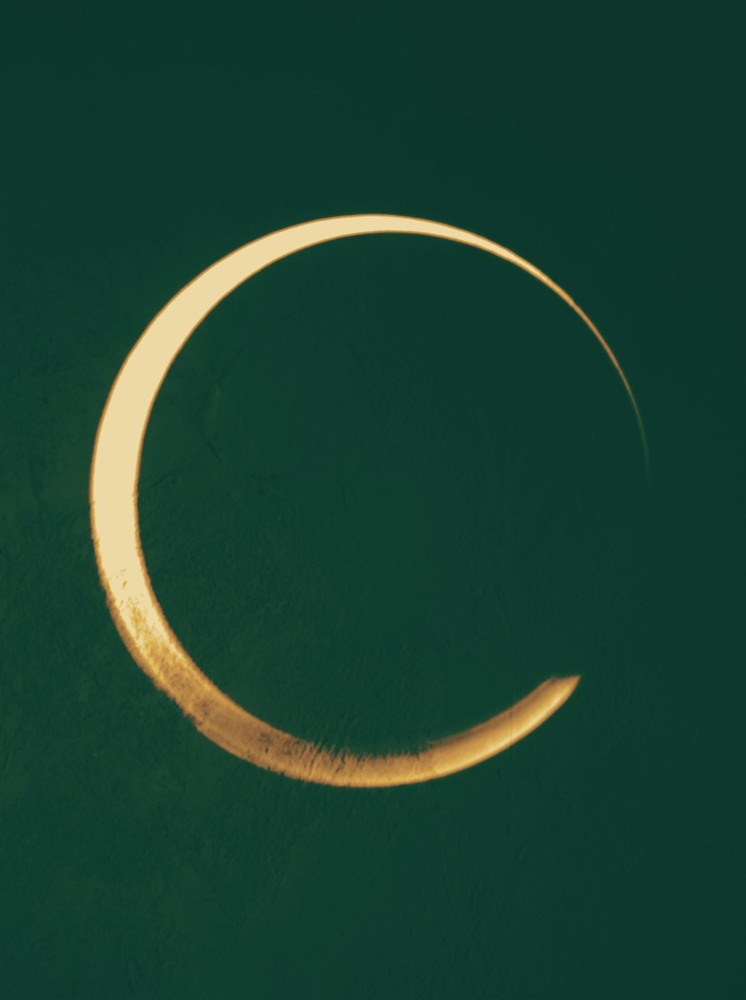

About Dorinaعن دورينا
A calm guide forpressure, emotions,and daily clarity.مرشدة هادئة لفهم الضغط،المشاعر، والوضوح اليومي.
Dorina’s public work is built around practical wellbeing education: noticing body signals, naming emotions, reading triggers, setting boundaries, and choosing one useful next step.يرتكز عمل دورينا العام على التوعية العملية بالرفاه: ملاحظة إشارات الجسد، تسمية المشاعر، قراءة المحفّزات، توضيح الحدود، واختيار خطوة مفيدة واحدة.


Her storyقصّتها
She learned pressure from the inside.تعلّمت الضغط من داخله.
For more than eight years, Dorina was the person busy offices leaned on. Calendars, deadlines, closing weeks, the quiet favour asked at seven in the evening. She watched capable people carry pressure silently, and she carried it too.لأكثر من ثماني سنوات، كانت دورينا الشخص الذي تستند إليه المكاتب المزدحمة. مواعيد، مهل نهائية، أسابيع إقفال، وذاك «الطلب الصغير» الذي يأتي في السابعة مساءً. رأت أشخاصاً أكفاء يحملون الضغط بصمت، وحملته هي أيضاً.
The turnالتحوّل
From managing offices to reading signals.من إدارة المكاتب إلى قراءة الإشارات.
What she noticed in those years became her method: pressure announces itself early — in the jaw, the pace, the inbox opened at midnight — long before it becomes a crisis. The CIRCLE Method grew from that observation: six practical moves that take a woman from the first body signal to one clear, chosen next step. Nothing mystical. The same care she once gave to calendars and contracts, turned toward the inner life.ما لاحظته في تلك السنوات صار منهجها: الضغط يعلن عن نفسه مبكراً — في الفكّ، في سرعة الإيقاع، في البريد المفتوح منتصف الليل — قبل أن يتحوّل إلى أزمة بوقت طويل. من هذه الملاحظة وُلد منهج CIRCLE: ست خطوات عملية تنقل المرأة من أول إشارة جسدية إلى خطوة تالية واحدة واضحة ومختارة. لا شيء غامض؛ العناية نفسها التي أولتها يوماً للمواعيد والعقود، موجّهة نحو الحياة الداخلية.
She also holds a Bachelor of Business Administration from the Arab Open University.وتحمل أيضاً بكالوريوس في إدارة الأعمال من الجامعة العربية المفتوحة.

Training and boundariesالتدريب والحدود
Precise about what she is, and what she is not.دقيقة في ما هي عليه، وفي ما ليست عليه.
Certified, and precise about it.معتمدة، ودقيقة في ذلك.
NFNLP NLP Master Practitioner and Neuro Linguistic Coach (June 2023)ممارسة متقدّمة في البرمجة اللغوية العصبية ومدرّبة لغوية عصبية من NFNLP (حزيران 2023)
The training behind the NLP-informed coaching tools she uses in every circle: precise language, outcome sentences, and small, chosen next steps.التدريب الذي تستند إليه أدوات الكوتشنغ المستوحاة من NLP التي تستخدمها في كل دائرة: لغة دقيقة، عبارات نتيجة، وخطوات تالية صغيرة ومختارة.
An educator and coach — not a therapist.مدرِّبة ومثقِّفة — لا معالِجة نفسية.
Dorina says this plainly in every session: her work is educational and non-clinical. She does not diagnose or treat any condition. When something deserves qualified professional care, she says so warmly and helps the person find it. That clarity is not a limitation — it is why the room feels safe.تقولها دورينا بوضوح في كل جلسة: عملها تثقيفي وغير عيادي. لا تشخّص ولا تعالج أي حالة. وحين يستحق أمرٌ ما رعاية مهنية مختصة، تقولها بدفء وتساعد على الوصول إليها. هذا الوضوح ليس قيداً — بل هو ما يجعل المساحة آمنة.
Known forما يميّزها
Making inner pressure easier to understand.تجعل الضغط الداخلي أسهل للفهم.
She works in Arabic, English and French — because the woman who most needs the session is not always the one most comfortable in English.تعمل بالعربية والإنكليزية والفرنسية — لأن المرأة التي تحتاج الجلسة أكثر من غيرها ليست دائماً الأكثر ارتياحاً للإنكليزية.
- 01Stress literacy in simple language.فهم التوتر بلغة بسيطة.
- 02Emotional awareness without shame.وعي بالمشاعر من دون لوم.
- 03Small tools for normal days and difficult days.أدوات صغيرة للأيام العادية وأيام الضغط.

Saturday 5 Decemberالسبت 5 كانون الأول
15 seats · 3 hours with a break · printed EN/AR kit · 7-day WhatsApp follow-up15 مقعداً · 3 ساعات مع استراحة · حقيبة أدوات مطبوعة بالعربية والإنكليزية · متابعة عبر واتساب لسبعة أيام
Pay by Whish, OMT or cash before the day · seats held 48 hoursالدفع عبر Whish أو OMT أو نقداً قبل يوم اللقاء · يُحجز المقعد لمدة 48 ساعة
Reserve a seatاحجزي مقعدكِ Not this date? Join the list for the next circleالموعد لا يناسبكِ؟ انضمّي إلى قائمة الدائرة القادمة